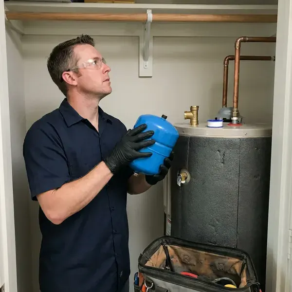

Water Heater Expansion Tank Installation in Junction City, KS
Dripping relief valve in Junction City, KS? KRV Plumbing tests your pressure and installs the right tank.
- Code Compliant
- Pressure Tested
- Code-Compliant Mounting
- Potable-Rated Tanks

Need a Water Heater Expansion Tank Installed in Junction City, KS?
A sized, charged tank keeps your heater running longer.
Licensed Expansion Tank Installers in Junction City, KS
Our team at KRV Plumbing works on homes all over Junction City. We size each tank to your heater and pressure, install it to code, and check the PRV and relief valve on the same visit so you know the whole system is working together and not just the part we touched. It is all one trip.
Our expertise includes:
- PRV testing and replacement
- Expansion tank sizing and installation
- Tank sizing by heater gallons, pressure and temperature

Additional Plumbing Installation Services in Junction City, KS
We install water heaters, pumps, lines, and fixtures across Junction City, KS with careful, permitted work that passes inspection the first time.


Customers
Why Choose KRV Plumbing for Water Heater Expansion Tank Installation in Junction City, KS?
Our plumbers check the PRV and the relief valve on the same visit. That way the whole system gets looked at together, and if the PRV is creeping above its setting or the relief valve has been weeping for months, we can fix it before it causes a bigger problem. It saves a second call.
- System Protection, The tank absorbs expanded hot water, so your heater and pipes are not strained.
- Properly Supported, Tanks are strapped or bracketed so their weight never hangs on the pipe.
- Extended Lifespan, Fewer pressure spikes means a longer-lived water heater.
Citywide Coverage
Older districts and new developments across Junction City both get prompt service. Same-day installs are usually possible, and they protect the plumbing in a 1950s house the same way they protect a new build with PEX and a tankless heater. The approach does not change.
Experienced Team
Licensed and trained on current Kansas plumbing codes, our team has installed hundreds of expansion tanks. Sizing charts are second nature to them, and they know which tanks hold their charge and which ones go waterlogged in a couple of years. Some brands last longer.
Safety-First Approach
Most plumbing codes require an expansion tank whenever a water heater goes on a closed system. We install to local code every time, and we support the tank on its own so a full tank never strains the fittings or the heater's cold inlet. Support is not optional.
Trusted Certified Junction City Plumbing Services Professionals
At KRV Plumbing, we are proud to offer certified plumbing services throughout Junction City, KS. Credentials matter in this trade. Our plumbers hold recognized industry credentials, and they follow strict safety and quality rules on every repair, installation and maintenance call we run.
Call Us Now PHCC Plumbing Contractor Recognition
PHCC Plumbing Contractor Recognition Better Business Bureau (BBB) Accreditation
Better Business Bureau (BBB) Accreditation Angi Certified Pro
Angi Certified Pro ISO 9001 Quality Management Certification
ISO 9001 Quality Management CertificationExpansion Tank Sizing and Installation in Junction City, KS
Watts Expansion Tank Installation in Junction City, KS
Watts makes a potable expansion tank line we install often, the PLT series. The tanks come precharged and we adjust them on site, which matters because the factory charge rarely matches the actual static pressure in a Junction City, KS home. We use a simple tire gauge.

Standard Water Heater Expansion Tank Installation in Junction City
Most tank-style water heaters on a closed system need an expansion tank on the cold supply. The tank goes on a tee in the cold line near the heater, precharge the air side to your measured house pressure, and strap it to the wall so the weight never hangs on the pipe in your Junction City home. We watch the gauge through one heat cycle.
Tank Sizing and Placement in Junction City
Sizing comes down to heater volume, supply pressure and water temperature. Those go into the manufacturer chart, then mount the tank on the cold inlet near the heater, in a spot you can reach later, because the precharge needs checking and the tank will eventually need replacing in your Junction City home. Reachable tanks are cheaper to service.
Brands and Quality Products in Junction City, KS
Potable-rated tanks are the only kind we install on drinking water. Our usual brands are Watts, Amtrol and Z-Flex, with liners that keep water off bare steel and diaphragms rated for drinking water, which matters because a hydronic heating tank looks similar but is not approved for your supply in Junction City, KS. Check the label for potable approval.
Commercial and Multi-Unit Expansion Tanks in Junction City
Apartment buildings and offices with several heaters need tanks sized for the whole hot water system. We include storage tanks and recirculation loops in the math, floor-mount the larger tanks with proper supports, and plan the work to keep hot water interruptions short for tenants in Junction City, KS. Weekend work is available.
Expansion Tank Sizing for Large Water Heaters in Junction City
Larger heaters and higher supply pressure call for a bigger tank. For a 75 or 80 gallon heater, a 4.5 gallon tank is common, and high-capacity systems may need more, so we work from the manufacturer chart instead of guessing, since an undersized tank over-flexes and fails early in Junction City. We size by the chart.
Brands and Tank Materials in Junction City, KS
Butyl diaphragms and lined chambers keep water from touching the steel shell. Private wells serve many rural homes, and minerals, sediment, and nitrates make periodic well testing a good habit. Connections are stainless or lead-free brass to resist corrosion, and we avoid tanks made only for hydronic heating, since those are not approved for drinking water and can rust from the inside. Look for the potable rating.

Expansion Tank Replacement in Junction City, KS
The bladder or diaphragm inside the tank is what fails. After it tears, water floods the air side, the tank goes heavy, and the pressure spikes come right back, so we replace the tank with a correctly sized unit and check the precharge before it goes on the line in Junction City, KS. They do not repair well.
Water Heater Expansion Tank Installation Near Me in Junction City, KS
Our plumbers work in Junction City every day and know how local water pressure and regulators affect heaters. That experience lets us size the tank correctly the first time, and you get a quick, clean install and a system that stays balanced long after we leave. Balanced pressure is the goal.
Relief valve dripping and searching for help nearby? Call us before buying a new water heater, because a quick pressure test tells us right away whether thermal expansion is the cause, and a tank costs far less than a new heater. It takes a few minutes.
KRV Plumbing at a Glance
- Fully licensed plumbing team covering Junction City, KS
- Same-day appointments and 24/7 emergency response
- Upfront, flat-rate pricing before work begins
- 4.9-star rated by 910+ Kansas customers
Junction City Map
Junction City Information
- Population
- 21,856
- Area codes
- Local
- Service area
- Junction City and towns within a 40 mile drive
- Nearby
- Manhattan, Salina, Emporia, Topeka
High incoming water pressure and widespread pressure regulators make thermal expansion a real issue for water heaters in Junction City, KS, and a properly charged expansion tank keeps that pressure under control.
Expert Services
Call KRV Plumbing for honest, reliable plumbing from people who know the trade in Junction City, KS.
Our Specialized Plumbing Services in Junction City, KS
At KRV Plumbing, we handle the full list of plumbing services across Junction City, KS. We go from leak detection all the way to full system installations, for homes and commercial buildings, and we do it quickly at a fair price. Explore our core services below:


How We Install Expansion Tanks in Junction City, KS
Here is how we take care of your expansion tank from the first call to the final pressure check.
Request a Quote
Call (316) 229-8459 and tell us about your water heater and any symptoms like a dripping relief valve. We give you an honest price.
Test and Size
We measure static pressure, check the PRV and relief valve, and pick the tank. The air charge is set to equal your pressure.
Install and Verify
We install and support the tank on the cold supply, then run the heater through a cycle. Pressure has to stay stable.
Frequently Asked Questions About Water Heater Expansion Tank Installation in Junction City
Residential expansion tank installs usually cost $250 to $550 with the tank and labor. Add an attic install, a bigger tank or a new PRV and it can reach $600 to $1,000.
Most standard installs finish in one to two hours. Bigger pipe changes can add time, especially if the cold supply needs rerouting to make room for the tee, and we keep the disruption to your hot water as short as we can. Hot water is back the same day.
Water spitting from the air valve is the clearest sign. Rust on the shell, banging pipes or fluctuating pressure can also point to it, since all of those show up when the tank stops absorbing expansion and pressure starts climbing again. A tap test helps confirm it.
Permit rules vary in Junction City, and they often depend on whether the tank goes in with a new water heater. A standalone tank often needs no permit, but we check the local rules and advise you before work starts, and when it is part of a heater replacement the permit covers both. Permits are on us.
A dripping T and P valve on the water heater is the most common symptom. Fluctuating pressure is another, and a waterlogged tank sounds dull all the way up when you tap it and feels heavy, which means the diaphragm has failed. At that point it gets replaced.
We recommend a professional install. Sizing, placement, support and the precharge all have to be right, and a mistake on any of them leads to leaks, early failure or a tank that does nothing to protect your heater. It is routine work for a plumber.
Yes, a little. Get the precharge checked roughly once a year, ideally during water heater service, so it still matches your house pressure, which helps the tank and the heater both last longer. The check is quick.
Water expands when it heats, and on a closed system that extra volume raises the pressure in every pipe. Each heating cycle spikes the pressure when there is no tank, which wears out the heater, the fixtures and the relief valve in Junction City. Water heater replacements, repipes, sewer line work, and new fixtures usually require a local permit and an inspection. Plenty of local codes require one.
What People Are Saying About Our Plumbing Experts?

Patricia H.
We had a slab leak that two other companies could not find. KRV Plumbing located it in under an hour with a listening device. They rerouted the line through the attic instead of breaking up the floor, so we kept our kitchen tile.
Slab Leak Repair · Topeka, KS
Kevin O.
Before buying our house I paid for a sewer camera inspection. KRV Plumbing found a belly in the line that held standing water about forty feet from the cleanout. We used the video to get the sellers to fix it before closing.
Sewer Camera Inspection · Manhattan, KS
Jessica T.
We were adding a gas range in a kitchen remodel and needed a new line run from the meter. The plumber pulled the permit, ran the pipe through the crawl space, and had it inspected and approved within the week.
Gas Line Repair · Lawrence, KS
Brian W.
I smelled gas behind the dryer and called right away. The plumber found a corroded flex connector, replaced it, and pressure tested the whole line before turning the gas back on. He let me watch the gauge hold steady for fifteen minutes.
Gas Line Repair · Emporia, KSMark T.
The floor drain in our office break room backed up every few weeks. The plumber ran a cable, then put a camera down and found roots at a joint about thirty feet out. Seeing it on the screen made the decision easy.
Drain Cleaning · Manhattan, KS
Lisa C.
Water was pouring out from under the washing machine on a holiday weekend. KRV Plumbing talked me through closing the valves over the phone and had a plumber at the house within ninety minutes. It was a burst fill hose.
Emergency Plumbing · Manhattan, KS